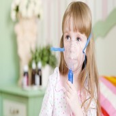
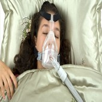
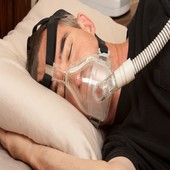

BLOG
Posts
Distraction while driving and road accidents.
Using electronic gadgets while driving is distractive and leads to road accidents. Performing secondary tasks such as dialing cell phones, texting or changing radio stations while driving is becoming a major cause of motor vehicle crashes, particularly among teenagers. The problem becomes more acute for new or inexperienced drivers and also adult divers. When the driver’s attention is shifting from the road to various tasks (dialing, texting, eating, loading up a CD or DVD, manually scanning or changing radio stations) even for a split of a second, the result can be disastrous with fatalities or severely injured passengers.Since this is a man-made problem, severe consequences should be a deterrent. Heavy penalties in the thousands of dollars as well as revoking drivers’ licenses should be implemented for those who perform secondary tasks and endanger the public. There should be no compromise when it comes to safety on the road.
Childhood obesity starts early
Studies published earlier this year showed that significant number of obese and overweight teenagers had weight issues early on in life. Of those who entered kindergarten over 12% were obese and almost 15% were overweight. At approximately 14 years of age almost 21% were obese and 17% were overweight. Additionally, if children were overweight in kindergarten they had 400% chance of becoming obese compared to normal-weight children. For the group of children who became obese during elementary school, 75% were in the upper percentile for body-mass index (BMI) at early age. It seems that the incidence of obesity for children in elementary school starts at much younger age. The take-home message and the lesson to be learned is that proper diet and healthy eating habits should be implemented at an early age, preferably in kindergarten or much earlier.
The affordable care act (ACA) and high deductible health insurance
What has become recently apparent in regard to the ACA was already cited in an article in the New England Journal of Medicine in October 17, 2013. I’m referring to increased health insurance premiums by the major private companies and its significant implications for healthcare providers, employers and patients. By expanding health insurance coverage high deductible health plans enrollment seems to be already increased. Additionally, out-of-pocket payments would be substantially increased before more comprehensive coverage begins. This was actually my understanding of the ACA a.k.a. “Obama care.”
Obama’s Health Care Reform and Affordable Care Act (ACA)
Obama’s health care reform seems on the surface a good idea affording healthcare insurance to millions uninsured Americans along with mitigating the rising cost of healthcare. However, this is a superficial solution to a complex problem. First of all, mandating such reform entails elaborate monitoring system which would cost the taxpayer between more than 3 trillion dollars, compounding the overwhelming existing bureaucracy and eventually depleting our treasury reserves. This will undoubtedly throw us into a deeper recession and potentially may begin the cycle of the new depression. If this happens, and I hope it will never happen, the government will not be able to pay and bear the cost for healthcare. Many hospitals, healthcare systems and doctors will end up in bankruptcy.
PEDIATRICS, the official journal of The American Academy of Pediatrics reports this month a few important observations based on three separate trials
Sugar-sweetened beverages and weight gain in 2 to 5-year-old children.Sugar sweetened beverage consumption has been linked to weight gain in older children as reported by me in previous blogs. The present study by Dr. Mark D.DeBoer and his associates from the University of Virginia School of medicine, division of pediatric endocrinology evaluated sugar-sweetened beverages consumption and body mass index (BMI) in 9600 children who were followed in early childhood. They concluded that “similar to what is seen among older children, children aged 2 to 5 years drinking sugar-sweetened beverages demonstrate higher BMI values”. They also conclude that pediatricians and parents should discourage such consumption to help avoid potential unhealthy weight gain in young children. They also state that from a public health perspective, strong consideration should be made toward policy changes leading to decrees in sugar-sweetened beverages among children.
Potential Consequences of Sleep Disorders
One of the most common sleep disorder is obstructive sleep apnea (OSA) affecting millions of individuals worldwide. In OSA the upper airways tend to collapse during sleep as a result of imbalance in forces that normally maintain patent (open) pharynx. The contribution of neurological imbalance to OSA is not entirely clear. Similarly, hormonal changes during sleep and inflammatory mediators have been also associated with sleep disorders. Regardless of what are the cardinal causes of OSA, the common denominator remains intermittent hypoxemia (low partial pressure of oxygen in the blood).
Did you know?
Alcohol use and abuse Alcohol use in adults contributes to 79,000 deaths and over $223 billion in socio- economic costs each year in the United States. Men who consume 15 or more standard drinks per week or 5 or more on an occasion, or women consuming 4 drinks or more on an occasion or 8 drinks weekly are subjected to alcohol-related harm. Alcohol consumption can have adverse social, legal, occupational, psychological and medical consequences.
Relationships Between the Effects of Lifetime Asthma, Smoking and Atopic Sensitization on Adult Lung Function
A new study shows a three-way interaction between the effects of asthma, active smoking and atopy on airflow obstruction in individuals with chronic obstructive pulmonary disease (COPD). The study, published in the American Journal of Respiratory and Critical Care Medicine in January 1, 2013 concludes that active smoking in patients with clinical asthma significantly contributes to fixed airway obstruction in middle-age, especially among individuals with atopy. Interaction between these factors provides a great incentive to quit smoking.
Association Between Obstructive Sleep Apnea and Cancer Incidence
Previous studies showed an Association between obstructive sleep apnea (OSA), and increased cancer mortality. It was not clear, however, if any association exists between obstructive sleep apnea and increased incidence of cancer. A new multicenter study investigated whether OSA is associated with increased cancer incidence in a large clinical population. The study investigated suspected OSA between 2003 and 2007 in seven Spanish teaching hospitals. A total of 4,910 patients were analyzed and followed up between 3.4 and 5.2 years. Increased overnight hypoxia was a representative of OSA severity and associated with increased cancer incidence. The researchers found that such association was limited to men and patients younger than 65 years of age. It seems that OSA may worsen the prognosis of cancer. The study was published in January 1, 2013 in the American Journal of Respiratory and Critical Care Medicine.
Traffic-related air pollution and lung function in children at 8 years of age
The December 15, 2012 issue of the American Journal of Respiratory and Critical Care Medicine describes a study that demonstrates relationship between traffic air pollution and lung function in children. Although long-term exposure to air pollution has been related to decline in lung function in children, the timing of its impact has not been elucidated. The researchers wanted to assess the role of long-term exposure to air pollution on deterioration of lung function in school-age children. For that purpose. They studied more than 1900 Swedish children with repeated questionnaires, dynamic spirometry and IgE measurements until eight years of age. They also measured particulate matter from road traffic and looked at the relationship between time of exposure during different time windows and FEV1 (a measure of lung function). The results of the study indicated that “exposure to traffic-related air pollution during infancy affects lung function in children up to eight years of age, and particularly those sensitized to common inhalants or food allergens.” It seems that long-term exposure to ambient air pollution can be associated with reduced lung function in children, although the role of timing of exposure remains unclear. The study shows an association between traffic-related their pollution exposure during infancy and decreased lung function in children up to eight years of age. “Early life exposure to traffic related their pollution may have long-term respiratory consequences.”